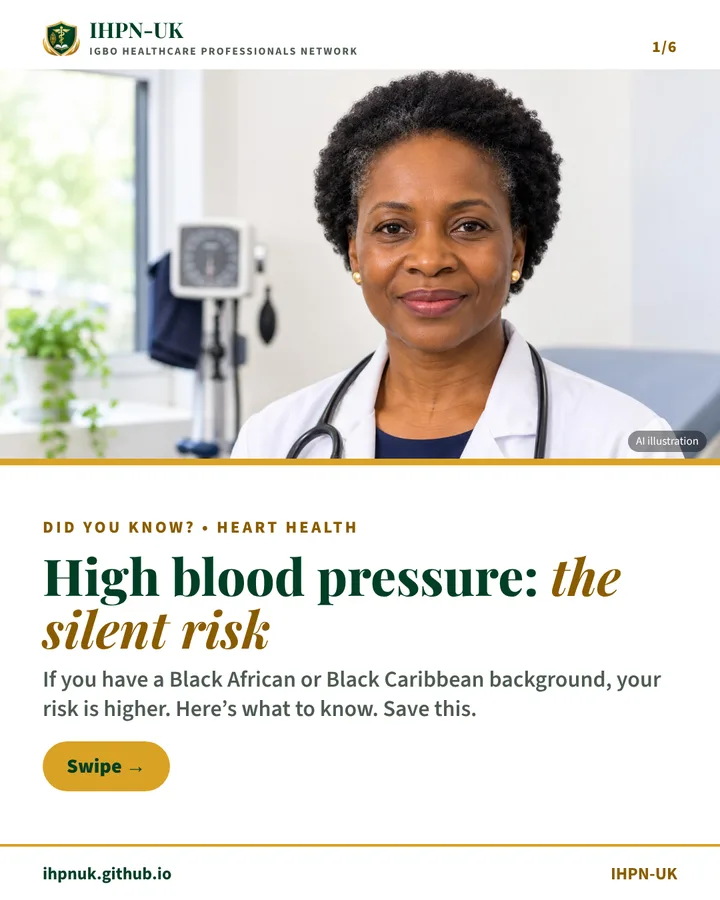
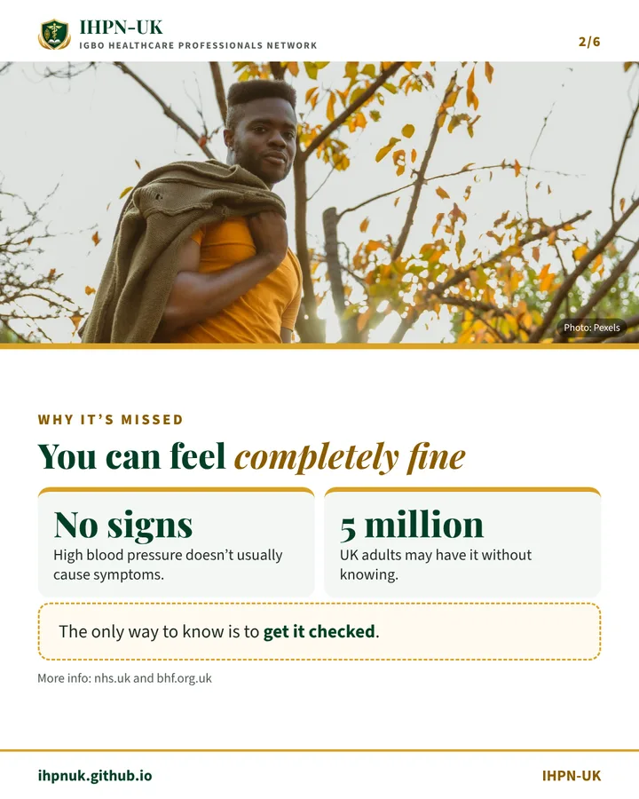
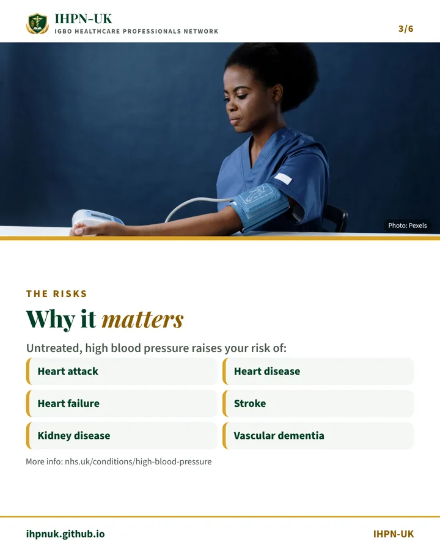
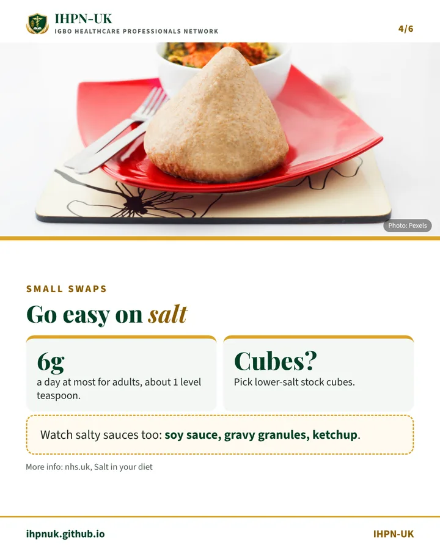
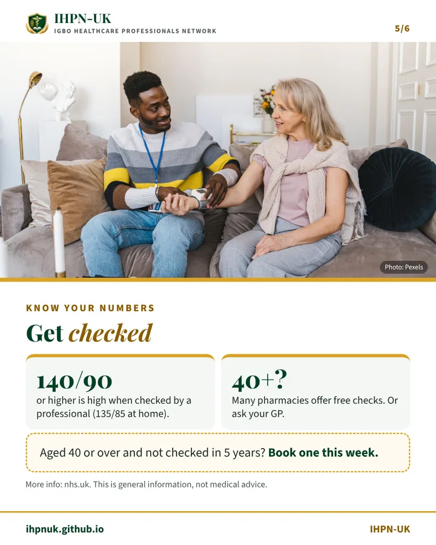
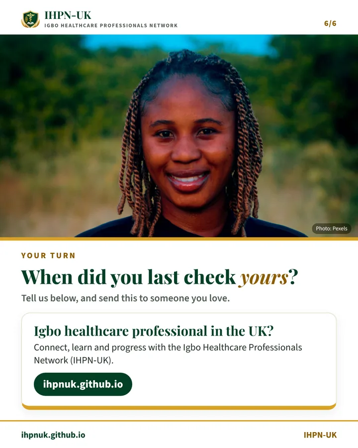

It doesn’t usually cause any symptoms, and the risk is higher for people of Black African or Black Caribbean heritage. Here’s what to know, and how to get checked.
The key facts in numbers
High blood pressure doesn’t usually cause any symptoms, so many people don’t know they have it. A quick check is the only way to find out.
5 millionadults in the UK may have high blood pressure without knowing
140/90or higher is high when checked by a professional (135/85 at home)
6gof salt a day at most for adults, about 1 level teaspoon
Slides: High blood pressure: the silent risk






Swipe or scroll sideways to see all 6 slides.
Who is at higher risk?
Your risk is higher if you have a Black African, Black Caribbean or South Asian background. Your risk is also higher if you’re over 65, have a family history of high blood pressure, eat a lot of salt, don’t exercise much, are overweight, drink a lot of alcohol or smoke.
Small swaps that help
Many everyday foods and sauces are high in salt. Try low or reduced-salt versions of foods and sauces, such as stock cubes and soy sauce, and go easy on salty sauces like gravy granules and ketchup. Being more active and keeping to a healthy weight help too.
Get checked
If you’re 40 or over and haven’t had your blood pressure checked for more than five years, get it checked. Many pharmacies offer free checks for people aged 40 or over, or you can ask your GP surgery. You can also check it at home with a blood pressure monitor.
Our lifestyle, our pressure: 7 things to look at
Generic advice says “eat less salt, exercise more”. This is for how many of us really live: Sunday soup, parties every month, long shifts, and family to support at home and abroad. Small changes we’ll actually make, not giving up our food.
1.The salt is already in the pot
Before anyone touches the salt shaker, the soup may already be salty from seasoning cubes, dried and smoked fish, stockfish, ground crayfish and tinned tomato paste. Adding cubes and salt doubles it.
Use one cube where you'd use two, or try a reduced-salt cube.
Taste the pot before adding any salt.
Let pepper, ginger, garlic, onions, scent leaf, uziza and uda carry the flavour.
No one is asking you to give up pounded yam, amala, eba or rice. The issue is weight, especially around the middle, which is one of the main things that raises blood pressure. Big balls of swallow every day add up.
Make the ball a bit smaller and have more of the soup.
Pack the soup with vegetables: ugu, bitter leaf, okazi, okra, spinach.
Go back for more soup, not more swallow.
Fruit counts too: plantain doesn't count as fruit, but oranges, pawpaw and mango do.
Weddings, naming ceremonies, birthdays and church harvests. The jollof, fried meat, small chops and drinks are part of the joy, but the drinks add up fast.
Keep to 14 units of alcohol a week at most. A strong stout or a large glass of wine can be 2 to 3 units each.
4.On your feet all shift isn't the same as exercise
Many of us work long shifts and feel we've "done enough moving". Aim for 150 minutes a week of activity that gets you breathing faster: you can still talk, but not sing.
A brisk 20 to 30 minute walk most days does it.
Get off the bus a stop early, or walk to church or the shops.
Night shifts, studying, children, and family at home who depend on us. Feeling stressed over a long period can raise your chances of high blood pressure.
Talk to someone you trust: a friend, your pastor, or our network.
Protect some rest between shifts.
If it's too much, speak to your GP. In England you can also refer yourself to NHS Talking Therapies for free.
High blood pressure usually has no symptoms, so feeling well doesn't mean it's under control. Bitter leaf water, garlic and other home remedies are not a replacement for prescribed medicine.
Keep taking your medicine. Talk to your GP before you stop.
Tell your pharmacist or GP about any herbs, supplements or remedies from home, because some can interact with your medicine.
High blood pressure runs in families, and in some communities it's hard to talk about. Ask your parents, uncles and aunties whether anyone has had high blood pressure or a stroke, then tell your GP.
With a family history, or a Black African or Caribbean background, you may need checks more often or at a younger age.
Our one-minute video, with captions. The voiceover is an AI-generated voice and the photos are stock images.
Read the video transcript
Voiceover: Did you know? High blood pressure is a silent risk. And if you have a Black African or Black Caribbean background, your risk is higher. It doesn’t usually cause symptoms. As many as five million adults in the UK may have it without knowing. The only way to know is to get checked. Left untreated, it raises your risk of heart attack, heart disease, heart failure, stroke, kidney disease and vascular dementia. Small swaps help. Adults should have no more than six grams of salt a day, about one level teaspoon. Using stock cubes? Pick ones that are lower in salt, and go easy on salty sauces. A reading of one hundred and forty over ninety or higher is high. Many pharmacies offer free checks if you’re forty or over, or ask your GP. Not checked in five years? Book one this week. When did you last check yours? Tell us below, and apply to join the Igbo Healthcare Professionals Network, IHPN-UK, at the link in our bio. (On this website, use the Apply to join button below.)
On screen: the six slides above, shown one by one.
Find out more
This page is general information, not medical advice. If you’re worried about your blood pressure, speak to your GP or pharmacist.
Further reading on the NHS and British Heart Foundation websites is linked above (links checked 26 November 2026). This page is our own summary in our own words; it is not written or endorsed by the NHS or the British Heart Foundation. Reviewed by a qualified IHPN-UK member. The cover picture is an AI illustration. People in the other photos are models in stock images (Pexels), not members.
Membership
Why join IHPN-UK?
Members hear about our talks, events and opportunities, including our first talk, on wellness and resilience, held on 22 November. You can ask questions and get support in our members’ group, and connect with Igbo healthcare professionals across the UK.
Membership is open to healthcare professionals of Igbo heritage who live and work in the UK.